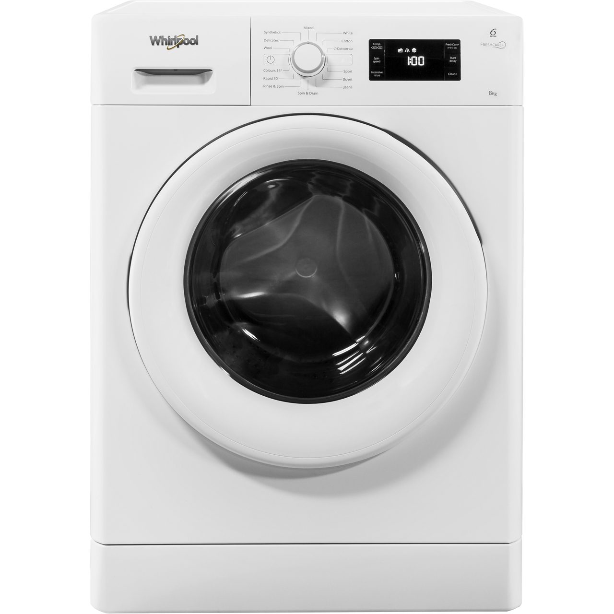
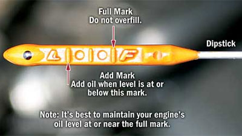

On this page I am going to outline some very basic how to examples. I will include how to use a washing machine, how to check the oil in a car (and how to find out which oil to use), some examples of comparison websites and a very basic furniture guide
One of the easiest jobs to do around the house is throwing your laundry in the washine machine, but lets be honest, for the most part when you live at home the laundry gets done for you so you never really learn how to do it yourself
So at the front of the washing machine there are a whole load of different wash types, temperatures and compartments and of course the drum
In most washing machines there are 3 compartments, 1 is usually used for powders, one for liquid detergent and 1 is for fabric softner, me personally I use pods in the washing machine which I just throw into the drum and use 1 of the compartments for fabric softner, however this is just my choice and there are many options to choose from in terms of liquids or powders you can buy
You should know by now if you have sensitivity to any liquids, I usually get a Non-Bio detergent for sensitive skin, there is also Bio detergent, both clean your clothes just fine!
You will also need to think about how you are going to dry your clothes, there are machines that do both ofcourse, I have heated clothes maidens in my flat but you can use radiators, washing lines or air dryers if you would prefer
I hope this has helped a little with the process, you will get used to doing it eventually, the next bit is actually putting the dry laundry away... Thats another story!
When it comes to buying furniture you may well be given some of the large items such as a fridge, bed and washing machine, but where can you find things like a dining table, wardrobe etc?
I have got a lot of my furniture throughout the years from charity shops are there are so many secondhand places you can look also, such as Facebook Marketplace, Gumtree, Schpock and Karrot
If you haven't been given any furniture what so ever, a few tips I have come to learn is that some things you need to spend that extra money to buy new
I would never buy a secondhand bed or fridge, only because with secondhand fridges I have had trouble with them dying on me and then I've lost the money from them being secondhand and need to spend more money on another one
Most other things are fine to buy secondhand, I wouldn't want to get a washing machine that is too old, but other than that I have never had many issues with secondhand furniture
There is also Freecycle but this doesn't tend to have larger items, it is worth a look just incase you may find something useful. My sofa was found for free on a buy & sell page via facebook and it is the comfiest sofa I have ever had
If you struggle financially I would suggest looking into local charities that may be able to help you with large purchases
Yes, you are probably sick to death of hearing the Go Compare advert or watching those silly meerkats, however these websites do come in really handy when it comes to finding better deals on utilities and insurance
Every year when my car insurance comes up I will always use multiple comparison sites to find the best deal, if you find one you like you can use the providers website and see if you can get an even better deal
I use Compare the Market and this gives me 2 for 1 cinema tickets! Just find the best site that works for you!
You take the step of purchasing a car and have no clue what to do with it, honestly when I got my car I didn't know to to put petrol in or turn the lights on until I was shown how to do it
One thing that is important is making sure the car keeps working and one very important job is checking the oil and refilling it when needed
So to do this first of all you need to open your bonnet and locate your dipstick. Yes its a silly name, but it is essential that you locate where it is in your car, if you aren't sure go to Kwik Fit or Halfords where they can show you
Another this that is super important is to find out which oil your car takes, you can usually find this information in your car handbook or simply look online if you don't have the handbook
